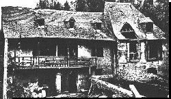
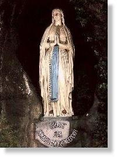
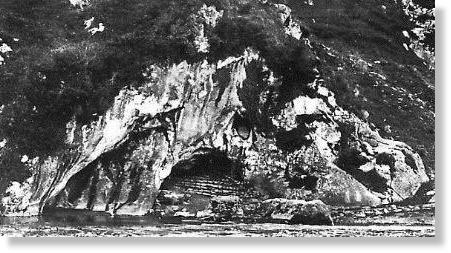
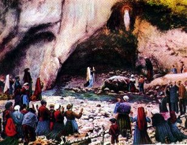

AS APARIÇÕES DE NOSSA SENHORA
 -
Quinta-feira, dia 11 de fevereiro de 1858, um dia
como outro qualquer. Eram 11 horas da manhã quando Bernadete
observou que tinha acabado a lenha. Seu pai estava deitado. Não
tinha trabalho. Economizava as forças para outro dia. O tempo
não estava bom. Chuviscava e havia nevoeiro. Logo apanhou a
capa, chamou sua irmã Toinete e convidou Joana Abadie, uma moça
grande e forte, filha do pedreiro, para acompanhá-la.
-
Quinta-feira, dia 11 de fevereiro de 1858, um dia
como outro qualquer. Eram 11 horas da manhã quando Bernadete
observou que tinha acabado a lenha. Seu pai estava deitado. Não
tinha trabalho. Economizava as forças para outro dia. O tempo
não estava bom. Chuviscava e havia nevoeiro. Logo apanhou a
capa, chamou sua irmã Toinete e convidou Joana Abadie, uma moça
grande e forte, filha do pedreiro, para acompanhá-la.
A mãe proibiu: "Bernadete, não".
Ela pensava no frio que fazia e que
poderia trazer consequências à asma de sua filha. Mas Bernadete insistiu
carinhosamente, dizendo-lhe que teria cuidado, que iria com o
capuz branco e o 
(Moinho Boly, onde nasceu Bernadete.)
Saem as três meninas no afã de cumprirem a tarefa, catando galhos e gravetos de lenha e ossos de animais, colocando estes dentro de um cesto, para vendê-los, à velha Letchina.
Passam pela pradaria do Paraíso, a ponte do canal que movimenta o moinho Savy, entram na pradaria do senhor La Fitte e chegam na ponta de areia do rio Gave. À esquerda levanta-se uma rocha íngreme com uma gruta na base. É Massabieille (penúltima fotografia abaixo). Embora chamada de gruta, na verdade ela é constituída de uma acentuada concavidade na rocha. A água do canal que movimenta os moinhos, banha-lhe o lado esquerdo e segue em direção ao Gave. Joana joga os ossos para o outro lado e passa pelo canal com o pequeno feixe de lenha na cabeça. Toinete, faz a mesma coisa, levando a lenha na mão. Como do outro lado as duas se manifestaram dizendo que a água do canal estava muito gelada, Bernadete permaneceu ali, sem saber o que fazer, com receios de pisar na água fria, por causa da sua asma, lembrando-se das recomendações da mãe.
Enquanto as duas corriam pela praia do Gave apanhando lenha e ossos, ela depois de procurar sem êxito, um lugar melhor para atravessar, sentou-se na margem do canal, em frente à gruta, tirou uma das meias e preparava-se para tirar a meia do outro pé, quando de repente, ouviu um barulho, "como se fosse um pé de vento". Não vê nada. Olhou para trás e observou que as folhagens dos arvoredos não se mexiam.
Curva-se para tirar a segunda meia. Ouve o mesmo barulho e vê em sua frente agitarem-se os ramos de uma roseira selvagem, que estava enraizada num nicho profundo situado aproximadamente a 3 metros de altura, do lado direito na entrada da gruta.
Seguiu-se uma "luz suave" que iluminou profusamente todo aquele lugar sombrio e no meio dela, surge uma DAMA maravilhosa, com idade entre 16 e 18 anos, vestida de branco . Abre os braços num gesto de acolhimento, como se estivesse convidando-a à aproximar-se. Ela fica espantada. É como se tivesse medo, "não para fugir explica melhor, mas pela emoção do inusitado e adorável encontro". Esfregou os olhos diversas vezes, para inteirar-se que não era um sonho e que realmente estava diante de uma visão encantadora, que lhe sorria afetuosamente.
Então conta, Bernadete:
 - "Meti a mão no bolso e encontrei
o terço. Queria fazer o Sinal da Cruz, mas não pude levar
- "Meti a mão no bolso e encontrei
o terço. Queria fazer o Sinal da Cruz, mas não pude levar
Depois do extraordinário acontecimento, Bernadete sentiu uma imensa felicidade que envolveu completamente a sua alma de uma deliciosa satisfação que lhe tirava todas as forças, para qualquer iniciativa.
Olhou para os pés e viu que havia retirado uma das meias, enquanto a outra pendurava do pé. Vagarosamente retirou-a, relembrando aqueles inesquecíveis momentos que acabava de viver. Com uma imensa sensação de paz no coração, atravessou o regato sem dificuldades, as águas estavam ligeiramente "aquecidas". Sentou-se numa das grandes pedras que se encontravam na entrada da gruta e permaneceu silenciosa e pensativa.
Voltam suas companheiras com uma boa provisão de lenha e de ossos e começam a dançar e pular na entrada da gruta, para comemorar o êxito da missão.
Não gostando de vê-las assim, para distrai-las pergunta:
- "Não viram nada"?
- "E tu, que é que viste"?
Ela compreende o mistério que acabava de acontecer e sente que terá que guardar este segredo, e por isso muda de assunto:
- "Sois umas trocistas. Disseram que a água do canal estava fria, achei-a agradável, estava morna".
Toinete e Joana não a levaram a sério, porque quando atravessaram o canal, a água estava tão gelada, que do outro lado tiveram que esfregar os pés, fazendo massagem para aquecê-los.
Joana, sem mais conversa, apanhou o seu feixe de lenha e o cesto de ossos e empreendeu rapidamente o retorno. As duas irmãs ficaram para trás.
Ela sentindo necessidade de falar,
de contar aquela maravilhosa experiência, em duas palavras narra tudo
a Toinete. Mas a irmã não acredita e pensa que Bernadete está
querendo incutir-lhe medo. Pega a lenha e os ossos e também
acelera o passo para casa.
Mas o caso dá para pensar, porque o acontecido é por demais singular. Toinete apesar de ter prometido, em casa, na primeira oportunidade, "bate com a língua nos dentes" e conta tudo à sua mãe. Luisa fica assustada "e quer saber toda história e muito direitinho", por isso convoca a filha. Entre o susto e o medo, ela quase nada falou. Sua mãe a repreende por tal comportamento e o pai, que ainda estava deitado, acrescenta que não quer os olhares dos outros caçoando de ninguém da família.
À noite, na hora das orações, chorou muito, estava bastante comovida com o que lhe havia acontecido. Sua mãe faz-lhe outras perguntas, mas ela nada respondeu.
Luisa fica perturbada e vai aconselhar-se com a vizinha Romaine Sajou. Ambas interrogam Bernadete. Ela nada responde. Concluem que foi uma "mentirínha" e agora, ela estava com medo. É fantasia de criança e por isso, não deve voltar à Massabieille.
Entretanto, no dia seguinte Bernadete se sente atraída a voltar à gruta. A mãe não lhe deixa e imperiosamente ordena: "Para o trabalho". Ela obedece. Passou todo este dia e o seguinte ocupando-se das obrigações domésticas. Não foi feito nenhum comentário a respeito do assunto.
Na tarde de sábado, dia 13, decide ir confessar-se. Conta tudo ao padre Pomian, que silenciosamente ouviu o depoimento. Depois perguntou-lhe, se podia contar ao Abade Peyramale. Ela consentiu.
Todavia, na escola do Hospício das Irmãs, os rumores espalharam-se com rapidez, porque Toinete e Joana incumbiram-se de falar à vontade.
No domingo, dia 14 de fevereiro, depois da Missa, as suas colegas resolvem ir a sua casa, pedir consentimento para que ela voltasse à Massabieille pois desejavam ver também o que ela tinha visto. A mãe não permitiu. Todavia depois de muita insistência das meninas a mãe mandou que conversassem com o pai, que estava tratando dos cavalos de João Maria Cazenave.
Com muito jeito conseguiram autorização para se ausentarem somente por um tempo de 15 minutos. E como tinham receios de ser alguma aparição maldosa, decidiram levar um frasco com água benta. Dividiram-se em dois grupos e foram para a gruta.
Ela chegando primeiro com o seu grupo, ajoelhou-se e começou a rezar o terço, enquanto as suas companheiras ficaram de pé ao seu lado.
Na segunda dezena sua face mudou. Seus olhos brilharam fortemente e ela falou para as colegas:
 - "Hei-la! O
terço está no braço... ELA olha para nós".
- "Hei-la! O
terço está no braço... ELA olha para nós".
As companheiras não viram nada. Rapidamente
Bernadete apanha o frasco com água benta 
- "Se vem da parte de Deus, fique, se não, pode ir embora"
Afirmou posteriormente:
- "Quanto mais eu a regava, mais Ela sorria e gastei todo o frasco".
A seguir entrou em êxtase. Empalidece, não ouve mais o que as outras dizem. As amigas assustadas observam as suas reações.
Suas companheiras acabaram por ficar preocupadas e por isso chamaram Nicolau, o moleiro do moinho de Savy, para retirá-la dali. Mas não foi fácil, porque parecia que ela tinha uma barra de ferro amarrada ao corpo, o seu peso aumentou consideravelmente; com muito esforço transportou-a nos braços pelo caminho, enquanto ela mantinha um sorriso nos lábios e os olhos fixos num ponto do Céu.
As meninas foram para as suas casas e as notícias chegaram a Lourdes.
A mãe Luisa assustada foi ao encontro da filha e desta vez com um "pau" na mão. Queria fazer valer a sua autoridade. Agora era definitivo, ela não voltaria à Massabieille, sentenciou a mãe, cheia de preocupações.

Desenho focalizando a sétima Aparição: Bernadete em êxtase segura uma grande vela com a mão direita e com a mão esquerda tentava proteger a chama para não se apagar, todavia não posicionando corretamente a mão, as chamas passavam por entre seus dedos sem queimá-los e sem produzir qualquer dor.